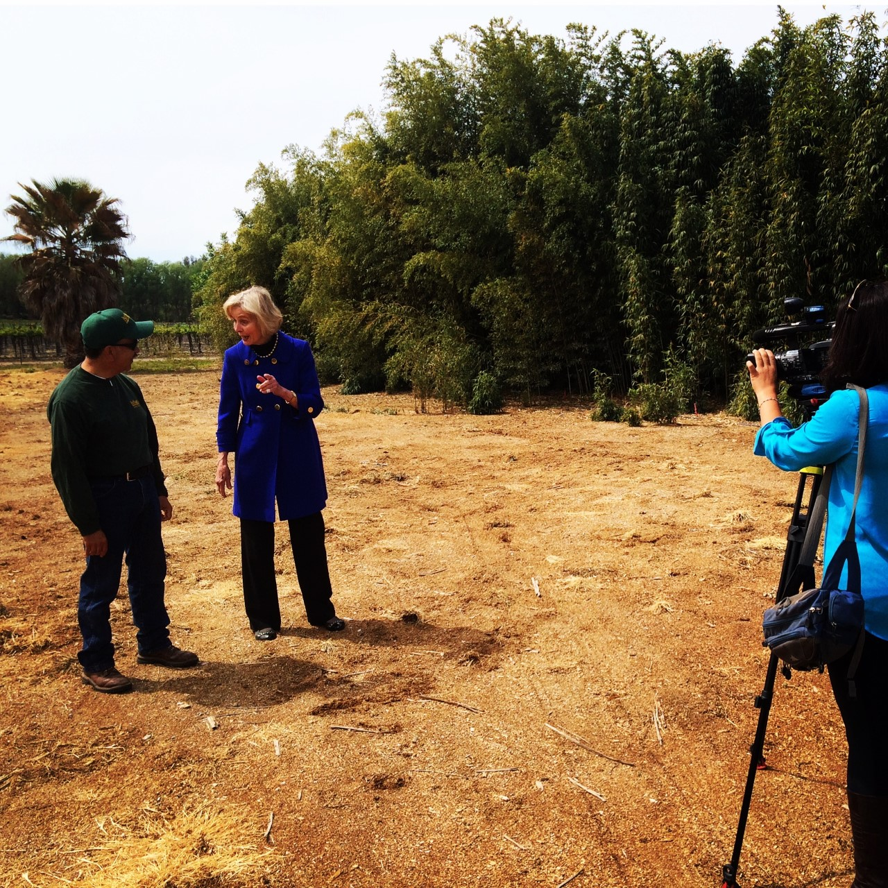

ADVANTAGES OF BAMBOO IN THE LANDSCAPE
- Beautiful, strong SCULPTURAL QUALITY
- Exotic, TROPICAL
- Fast, Tall VISUAL SCREENING
- Multitude of species and pruning choices allows for great VARIETY OF EFFECTS: from bushy, dense screens to wide-open columns, unique individual specimens to ground covers
- Vertical growth MINIMIZES THE FOOTPRINT, especially useful for smaller, urban locations
- Movement of the culms create RELAXING, MEDITATIVE, MUSICAL rustling sounds
- Adds the greatest amount of OXYGEN TO THE AIR of any plant
BAMBOO PROTECTS THE ENVIRONMENT & THE AIR WE BREATHE!
- Bamboo is the fastest growing canopy for the regreening of degraded lands
- Bamboo releases 35% more oxygen than equivalent stands of trees
- Bamboo can sequester up to 12 tons of carbon dioxide from the air per hectare (2.5 acres).
- Imagine if we all add a few plants to our yards!
- Bamboo can also lower light intensity and protects against ultraviolet rays.
 Sharing the beauty and many benefits of Bamboo with Congresswomen Lois Capps